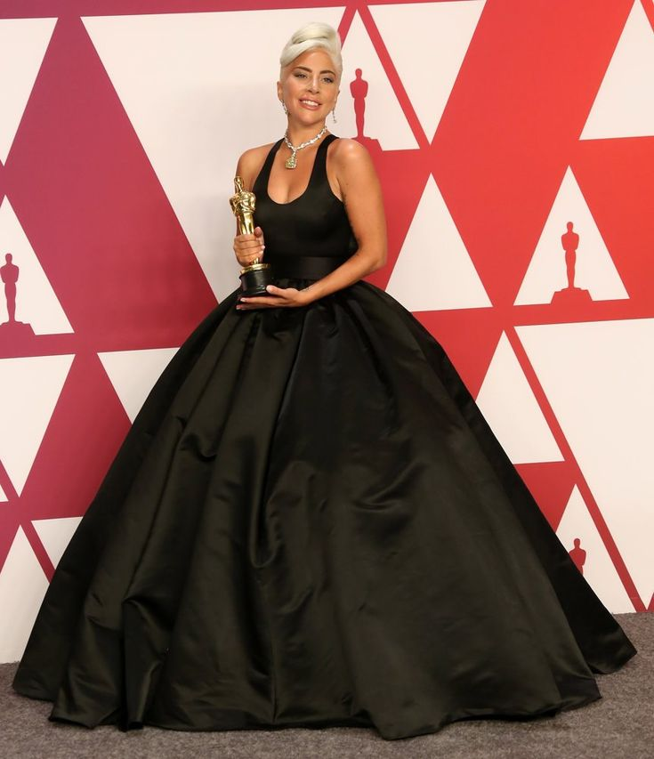

Кто такая Леди Гага?

Стефани Джоанн Анджелина Джерманотта (родилась 28 марта 1986), известная всему миру как Lady Gaga — американская певица, автор песен, актриса и филантроп.
Она стала известна благодаря своим экстравагантным образам и уникальному голосу.
Дебютный альбом The Fame (2008) стал мировым хитом с синглами "Just Dance" и "Poker Face".
Гага начала свою карьеру, выступая в клубах Нью-Йорка. Позже она подписала контракт с лейблом Interscope Records.
Она также известна своей актерской работой: роль в фильме "Звезда родилась", за которую получила "Оскар" за лучшую песню "Shallow".
Дискография
Студийные альбомы:
- The Fame (2008)
- The Fame Monster (2009)
- Born This Way (2011)
- ARTPOP (2013)
- Cheek to Cheek (2014)
- Joanne (2016)
- A Star Is Born (2018)
- Chromatica (2020)
- Love for Sale (2021)
Топ-5 песен:
- Bad Romance
- Shallow
- Poker Face
- Born This Way
- Always Remember Us This Way
Фотогалерея



Видео
Bad Romance
Judas
Музыка
Shallow (из фильма "Звезда родилась")
Always Remember Us This Way
Турне и концерты
| Год | Название тура | Альбом | Концертов |
|---|---|---|---|
| 2009-2010 | The Fame Ball Tour | The Fame | 83 |
| 2010-2011 | The Monster Ball Tour | The Fame Monster | 200+ |
| 2012-2013 | Born This Way Ball | Born This Way | 98 |
| 2022 | The Chromatica Ball | Chromatica | 20 |
| 2025 | The Mayhem Ball | Mayhem | 60 |